Circuit et système
Table of Contents
1 Chapitre 1
1.1 Unités
1.1.1 Tableau récapitulatif
| Nom | S | Unité/S | Rapport entre unités |
|---|---|---|---|
| Intensité du courant élec. | \(I\) | ampère/\(A\) | \(C \cdot s^{-1}\) |
| Puissance | \(P\) | watt/\(W\) | \(J \cdot s^{-1}\) |
| Quantité d'élec., charge élec, | \(q\), \(Q\) | coulomb/\(C\) | \(s \cdot A\) |
| Tension élec., diff. de potentiel élec. | \(U\) / \(V\) | volt/\(V\) | \(W \cdot A^{-1}\) |
| Résistance élec. | \(R\) | ohm/\(\Omega\) | \(W \cdot A^{-1}\) |
| Conductance élec. | \(G\) | siemens/\(S\) | \(A \cdot V^{-1}\) |
| Capacité élec. | \(C\) | farad/\(F\) | \(C \cdot V^{-1}\) |
| Inductance | \(L\) | henry/\(H\) | \(V \cdot s \cdot A^{-1}\) |
1.1.2 Quelques rapports/relations important(e)s
1.1.2.1 Charge et courant
\(i(t) = \frac{dq}{dt}\)
\(q(t) = \int\limits_0^t i(\tau)d\tau\)
1.1.2.2 Puissance
Dans un circuit électrique, la puissance instantanée \(p(t)\) est égale au produit de la tension et du courant instantanés et la puissance moyenne \(P\), à la valeur moyenne de la puissance instantanée.
\(p(t) = u(t)i(t)\)
\(P = \frac{1}{t_2-t_1} \int\limits_{t_1}^{t_2} u(t) i(t) dt\) ou \(P=\frac{1}{T} \int\limits_0^T u(t) i(t) dt\)
1.1.2.3 Énergie
Le joule (\(J\)) équivaut au travail produit par une force de 1 \(N\) dont le point d'application se déplace d'un mètre dans le sens de la force.
\(w(t) = \int\limits_0^t p(\tau)d\tau\)
1.2 Éléments de circuit passifs
1.2.1 Résistance
- Satisfait la loi d'Ohm : \(u(t) = R i(t)\)
- Puissance dissipée : \(p(t) = u(t)i(t) = Ri^2(t) = \frac{u^2(t)}{R}\)
- Énergie dissipée (sous forme de chaleur): \(w_R(t) = R \int\limits_0^t
i^2(\tau)d\tau = \frac{1}{R} \int\limits_0^t u^2 (\tau)d\tau\)
- Régime continu : \(i(t) = I\ u(t) = U \Rightarrow\ w_R(t) = RI^2t=\frac{U^2t}{R}\)
- Régime sinusoïdal : \(u(t) = Û \sin \omega t \Rightarrow\ w_R(t) = \frac{Û^2}{2R}\left[ t - \frac{1}{2\omega} \sin(2\omega t)\right]\)
- Court-circuit
- Soit un circuit dont deux points sont reliés par une résistance. Si l'on fait tendre la valeur de cette résistance vers zéro, ces deux points deviennent en court-circuit.
- En pratique, un bout de fil constitue souvent (pas toujours !) un court-circuit.
- Circuit ouvert
- Soit un circuit dont deux points sont reliés par une résistance. Si l'on fait tendre la valeur de cette résistance vers l'infini, ces deux points deviennent en circuit ouvert
- En pratique, on réalise un circuit ouvert en enlevant tous les éléments qui relient les deux points du circuit.
1.2.2 Conductance
Inverse de la résistance (\(G=1/R\)) : \(i(t) = Gu(t)\)
1.2.3 Capacité
- Obéit aux relations suivantes : \(q(t) = Cu(t)\)
- Vu que le courant est le débit des charges, on obtient :
- \(i(t) = \frac{dq}{dt}\)
- \(i(t) = C\frac{du}{dt}\)
- \(u(t) = \frac{1}{C} \int\limits_{-\infty}^ti(\tau)d\tau = u(0) + \frac{1}{C} \int\limits_{0}^ti(\tau)d\tau\)
- Courant et tension
- En régime continu : circuit ouvert
- En régime sinusoïdal : \(Î = \omega C Û\)
- Attention pas de saut de tension ! (Si sauts de courant, tension = moyenne, donc pas de sauts)
{kind=link}
- Énergie électrostatique
- \(w_c(t)=\frac{1}{2}Cu^2(t)\)
- Régime sinusoïdal (\(u(t)=Û \sin \omega t\)) : \(w_c(t) = \frac{CÛ^2}{2} \sin^2 \omega t = \frac{CÛ^2}{4} \left[ 1 - \cos 2 \omega t \right]\)
1.2.4 Inductance
- Obéit aux relations suivantes :
- \(u(t) = L \frac{di}{dt}\)
- \(i(t) = \frac{1}{L} \int\limits_{-\infty}^t u(\tau)d\tau = i(0) + \frac{1}{L} \int\limits_0^t u(\tau)d\tau\)
- Courant et tension
- En régime continu : court-circuit
- En régime sinusoïdal : \(Û = \omega L Î\)
- Attention pas de saut de courant !
- Énergie magnétique :
- \(w_L(t) = \frac{1}{2} Li^2(t)\)
- Régime sinusoïdal (\(i(t)=Î \sin(\omega t)\)) : \(w_L(t) = \frac{LÎ^2}{2} \sin^2 \omega t = \frac{LÎ^2}{4} \left[ 1 - \cos 2\omega t \right]\)
1.2.5 Inductances couplées (mutuelles)
Des inductances couplées constituent un biporte défini par les relations
constitutives :
\(u_1 = L_{11} \frac{di_1}{dt}+ L_{12}\frac{di_2}{dt}\)
\(u_2 = L_{12} \frac{di_1}{dt}+ L_{22}\frac{di_2}{dt}\)
D'une part, nous avons les inductances propres définies par \(L_{11}\) et \(L_{22}\) et de l'autre l'inductance mutuelle définie par \(L{12}\)
1.3 Éléments de circuit actifs
1.3.1 Source de tension idéale
- Élément de circuit capable de fournir ou absorber de l'énergie électrique et dont la tension à ses bornes est constante et indépendante de la charge qui lui est branchée
Une source de tension ne fournit aucune énergie lorsqu'elle est en circuit ouvert
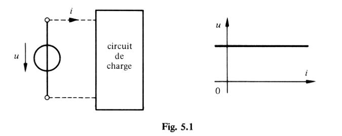
1.3.2 Source de tension 'réelle'
La tension d'une source de tension réelle, comme une baterrie, diminue en fonction du courant qu'elle fournit. On peut modéliser une telle source par une source idéale en série avec une résistance :
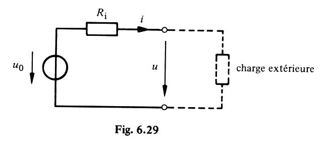
\(u=u_0 - R_ii\)
1.3.3 Source de courant idéale
- Élément de circuit capable de fournir ou absorber l'énergie électrique et dont le courant qui y circule est constant et indépendant de la charge qui lui est branchée.
- Une source de courant idéale ne fournit aucune énergie lorsqu'elle est en court circuit.
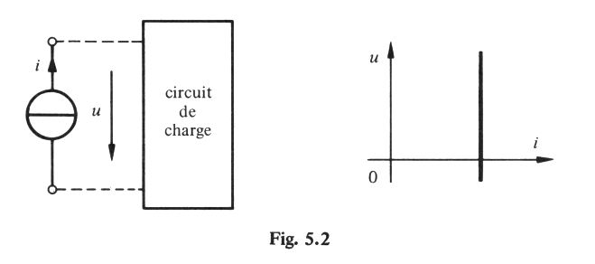
1.3.4 Source de courant 'réelle'
Caractéristique courant-tension et circuit équivalent :

1.4 Lois de Kirchhoff
1.4.1 Pour les noeuds
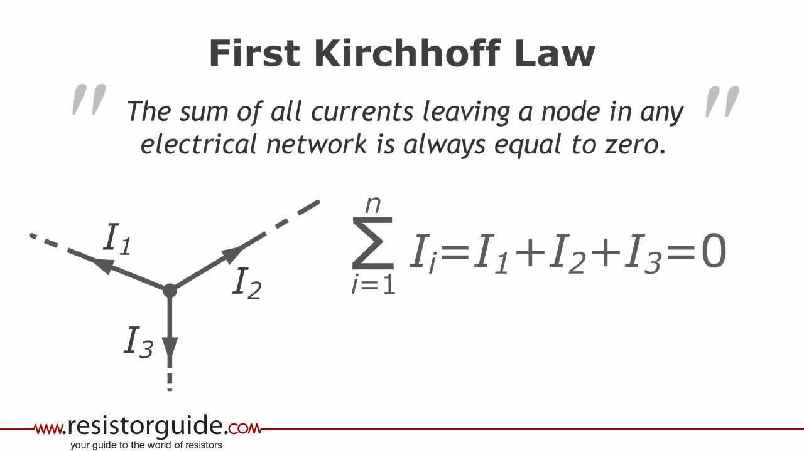
1.4.2 Pour les mailles
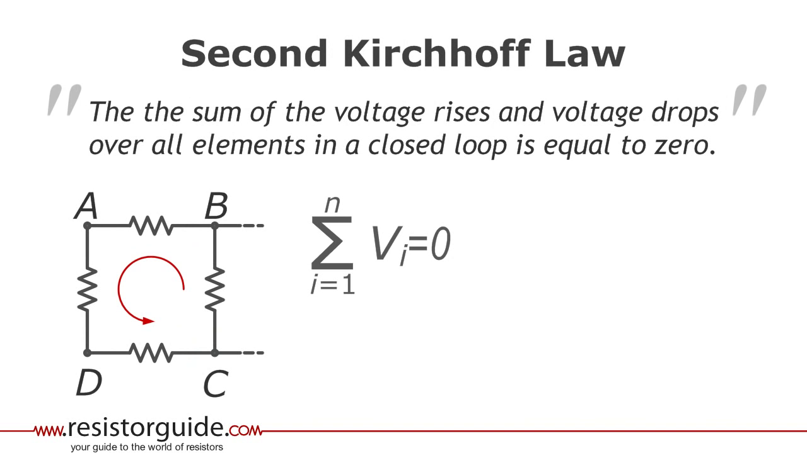
1.5 Éléments en série
Des éléments connectés en série sont parcourus par le même courant. La tension aux bornes du circuit est égale à la somme des tensions relatives à chaque élément.
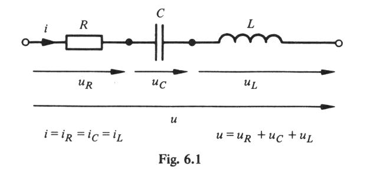
1.5.1 Résistances en série

\(R_s=\sum\limits_{k=1}^n R_k\)
1.5.2 Capacités en série
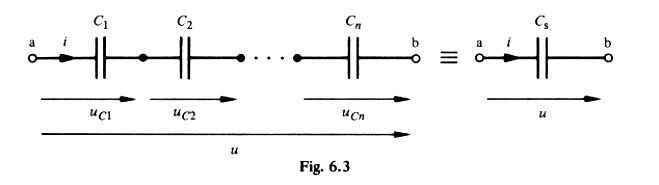
\(\frac{1}{C_s} = \sum\limits_{k=1}^n \frac{1}{C_k}\) et \(u(0) = \sum\limits_{k=1}^n u_{C_k}(0)\)
1.5.3 Inductances en série
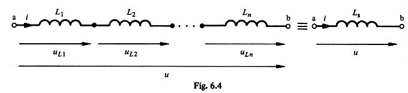
\(L_s = \sum\limits_{k=1}^n L_k\) et \(i(0) = i_{L_k}(0)\)
1.5.4 Sources de tension en série
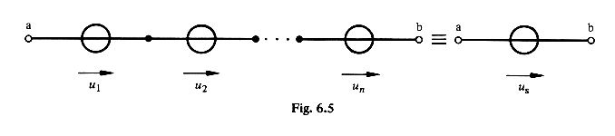
\(u_s = \sum\limits_{k=1}^n u_k\)
1.5.5 Sources de courant en série
Impossible, sauf si toutes les sources individuelles produisent le même courant
1.6 Éléments en parralèle
Des éléments connectés en parallèle sont soumis à la même tension. Le courant total est la somme des courants individuels.
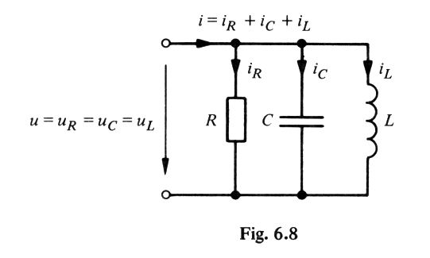
1.6.1 Résistances en parrallèle
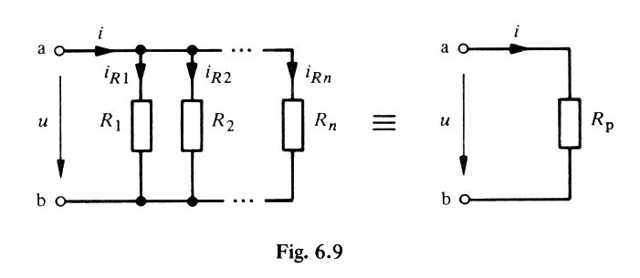
$\frac{1}{R_p} = ∑\limitsk=1n \frac{1}{R_k}
1.6.2 Capacités en parrallèle
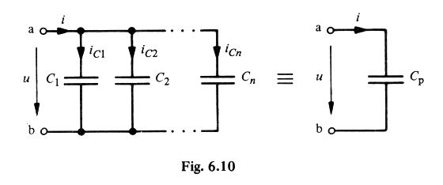
\(C_p = \sum\limits_{k=1}^n C_k\) et \(u(0) = u_k(0)\)
1.6.3 Inductances en parrallèle
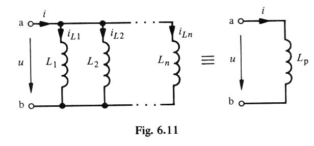
\(\frac{1}{L_p}=\sum\limits_{k=1}^n \frac{1}{L_k}\) et \(i(0) = \sum\limits_{k=1}^n i_{L_k}(0)\)
1.6.4 Sources de tension en parrallèle
Impossible, sauf si toutes les sources individuelles produisent la même tension.
1.6.5 Sources de courant en parrallèle
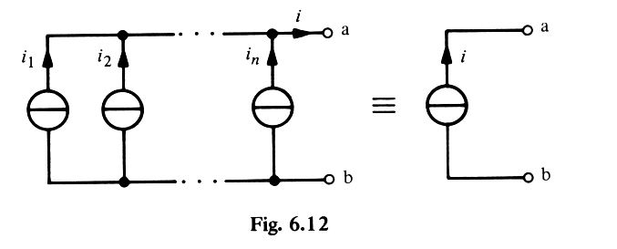
\(i_p = \sum\limits_{k=1}^n i_k\)
1.7 Diviseurs de tension et de courant
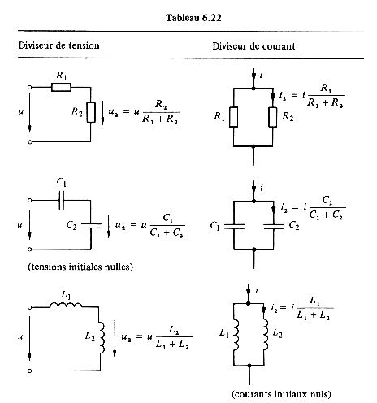
1.8 Circuits
2 Chapitre 2
2.1 Circuits linéaires
- Un circuit linéaire est celui dont la sortie est reliée linéairement à son entrée.
- Un circuit linéaire ne comporte que des éléments linéaires, des sources linéaires dépendantes et indépendante
- Questions :
- Résistance = linéaire
- Capacité = linéaire
2.2 Principe de superposition
- Le courant et les tensions dans un élément quelconque d'un circuit linéaire sont donnés par la somme des tensions et des courants produits dans cet élément par chaque source prise séparement.
- Attention ce théorème ne s'applique pas à la puissance.
- Exemple :
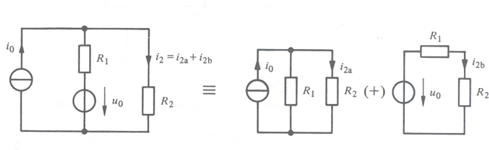
2.3 Transformation de sources
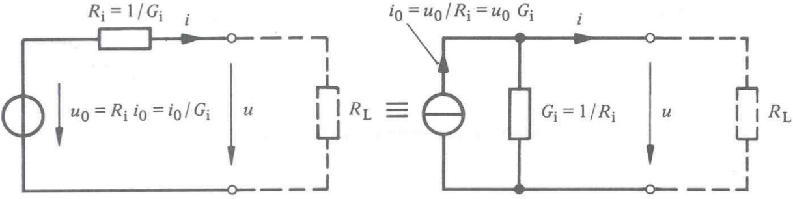
Plus d'exemples dans le cours
2.4 Théorème de Thévenin
- But : remplacer un circuit complexe par un circuit composé d'une source de tension et d'une résistance.
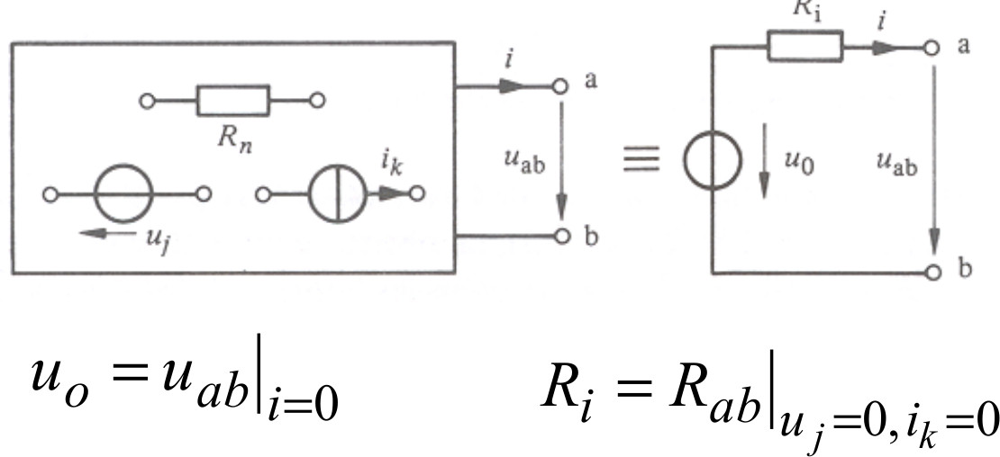
- Procédure :
- Identifier les bornes du circuit et la charge externe
- Mesurer ou calculer la tension aux bornes du circuit sans charge extérieure. C'est la tension de Thévenin
- Annuler les sources indépendantes et déterminer la résistance vue des bornes du circuit. C'est la résistance de Thévenin
- Théorème de Thévenin :
- Annuler une source de tension consiste à la remplacer par un court-circuit
- Annuler une source de courant consiste à la remplacer par un circuit-ouvert
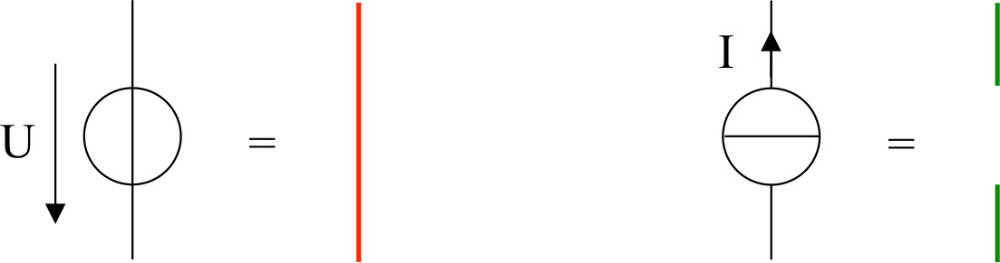
2.5 Théorème de Norton
- Corollaire au théorème de Thévenin, but :
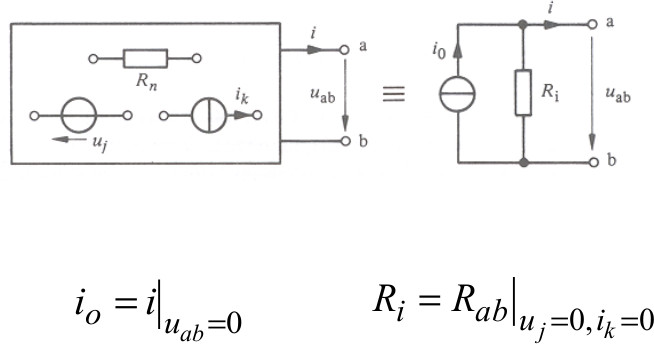
- Procédure :
- Identifier les bornes du circuit et la charge externe
- Court-circuiter les bornes du circuit et déterminer théoriquement ou expérimentalement l'intensité du courant du court-circuit. C'est la source de courant de Norton.
- Annuler les sources indépendantes et déterminer la résistance vue des bornes du circuit. C'est la résistance de Norton et de Thévenin.
2.6 Transfert maximal de puissance
Comment connaître la valeur de résistance de charge pour laquelle cette dernière dissipera un maximum de puissance ?
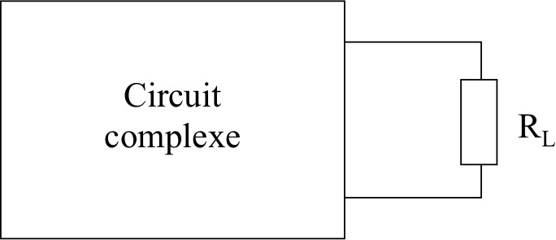
On remplace le circuit complexe par son équivalent de Thévenin :
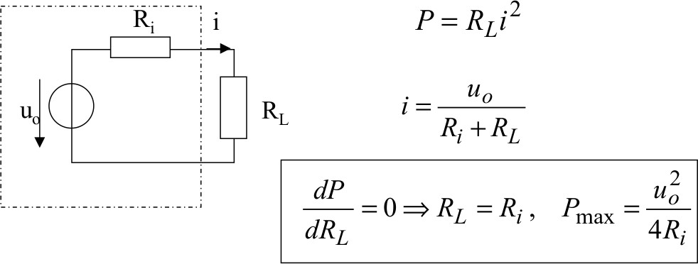
3 Chapitre 3
3.1 Analyse nodale
- Sélectionner le noeud \(n\) comme noeud de rérérence. Attribuer les tensions \(v_1,v_2,...,v_{n-1}\) aux autres (\(n-1\)) noeuds. Les différneces de potentiel sont établies par rapport au noeud de référence.
- Appliquer la loi de Kirchoff (courants) à chacun des \(n-1\) noeuds. Exprimer les courants des branches.
- Résoudre le système d'équation simultanées afin d'obtenir les valeurs ds tensions inconnues.
3.1.1 TODO ajouter exemple
3.2 Application
- La méthode nodale s'applique à des circuits avec des sources de courants (indép. ou dép.)
- La méthode 'par inspection' ne s'applique qu'aux circuits avec des sources de courants indép.
3.3 Analyse de mailles
- Procédure générale d'analyse des circuits utilisant les courants des mailles comme variables du circuit.
- Ne s'applique que lorsque le circuit est de type planaire !
3.3.1 Circuit planaire
Un circuit planaire est un circuit pour lequel les branches ne se croisent pas.
3.3.2 Boucle
Une boucle est une maille qui ne contient pas d'autres mailles en son sein.
Pour l'analyse, on définit un courant virutel en leur sein.
3.3.3 Procédure
- Identifier les courants des mailles \(i_1,i_2,...i_n\) pour les \(n\) boucles du circuit.
- Appliquer la loi de Kirchoff (tensions) à chacune des \(n\) boucles. Utiliser la loi d'Ohm pour exprimer les tensions en termes de courant de maille (pas des autres courants déjà présents).
- Résoudre les \(n\) équations résultantes pour obtenir les courants de mailles.
4 Chapitre 4
4.1 Fonctions périodiques
Une fonction sinusoïdale est une fonction qui vérifie la relation \(f(t)=f(t+nT)\), où \(n\) est un nombre entier et \(T\) la période mesurée en unité de temps.
- Valeur crête ou amplitude \(A\): valeur maximale d'une fonction périodique
- Valeur crête à crête : écart maximal d'amplitude atteint durant une période
- Valeur moyenne : \(\bar{X} = \frac{1}{T} \int\limits_t^{t+T} x(\tau) d\tau\)
- Valeur efficace : \(X = \sqrt{\frac{1}{T} \int\limits_t^{t+T} x^2(\tau)d\tau}\) toujours positif !
4.2 Fonction sinusoïdale :
\(x(t) = A \sin(\frac{2\pi}{T}t + \alpha)\)
- Fréquence : Nombre de cycle par unité de temps
\(f=1/T\)
\(x(t) = A \sin(\frac{2\pi}{T}t + \alpha) = A \sin(2\pi ft + \alpha)\)
4.3 Grandeurs sinusoïdales
Unité de mesure: le hertz (Hz)
- Fréquence angulaire ou pulsation ω :
- unité rad/s
- \(\omega = 2 \pi f = \frac{2\pi}{T}\)
- \(x(t)=A \sin(\omega t + \alpha)\)
- Valeur moyenne : toujours nulle
- Valeur efficace : \(\frac{A}{\sqrt{2}}\)
- \(u(t) = \hat{U} \cos(\omega t + \alpha)\)
- \(i(t) = \hat{I} \cos(\omega t + \beta)\)
- \(U = \hat{U}/\sqrt{2}\)
- \(I = \hat{I} / \sqrt{2}\)
- \(u(t) = \sqrt{2} U \cos(\omega t + \alpha)\)
- \(i(t) = \sqrt{2} I \cos(\omega t + \beta)\)
- Déphasage :
- Déphasage entre \(u(t)\) et \(i(t)\): \(\varphi = \alpha - \beta\)
- \(\varphi > 0\) : tension en avance sur le courant
- \(\varphi < 0\) : tension en retard sur le courant
- Échauffement d'une résistance
- \(u(t) = \hat{U} \sin(\omega t)\)
- \(i(t) = \frac{\hat{U}}{R}\sin(\omega t)\)
- \(U = \frac{\hat{U}}{\sqrt{2}} \Rightarrow P = \frac{U^2}{R}\)
- \(\hat{U} = R\hat{I}\) et \(I=\frac{\hat{I}}{\sqrt{2}}\) \(\Rightarrow P = R I^2\)